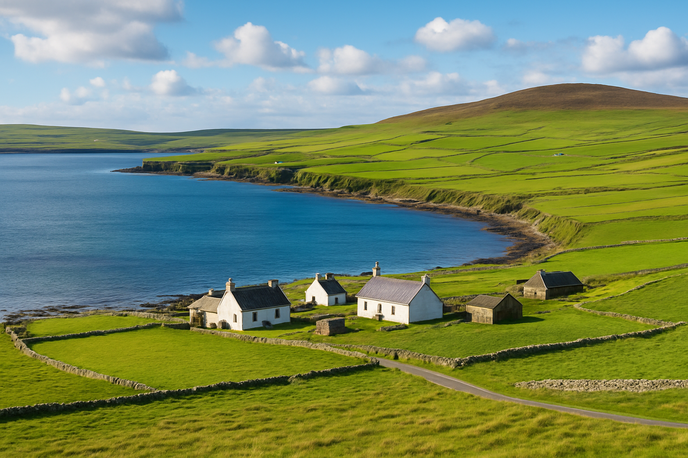

Explore
Mainland Orkney
The heart of Orkney, discover the vibrant island spirit. Whether it tasting hand-dived scallops or award winning whiskies across the cobbled lanes of Kirkwall, or travelling 5000 years back in time to rediscover Neolithic sites such as Skara Brae, Maeshowe and the Ring of Brodgar. If UNESCO World Heritage Sites aren't your thing, you could always go on endless coastal hikes, try out kayaking for the first time, explore St Magnus Cathedral or just see what the local galleries, gift shops and caffes have to offer.

Hoy

Rousay
Dubbed "The Egypt of the North" (probably not quite as warm). Explore over 150 ancient sites including Midhowe Broch and Midhowe Chambered Cairn. And embrace nature, enjoying scenic walks without the crowds, just look out for the otters!
Shapinsay